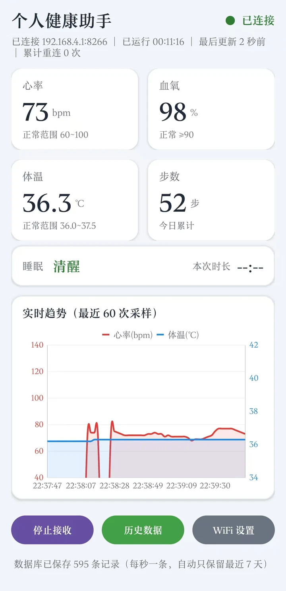
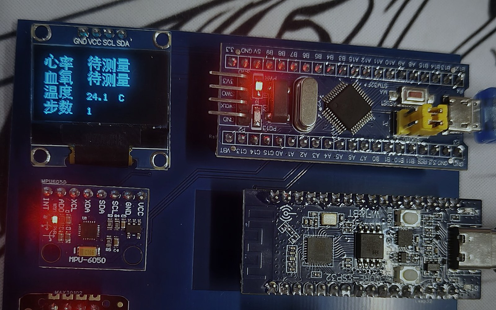
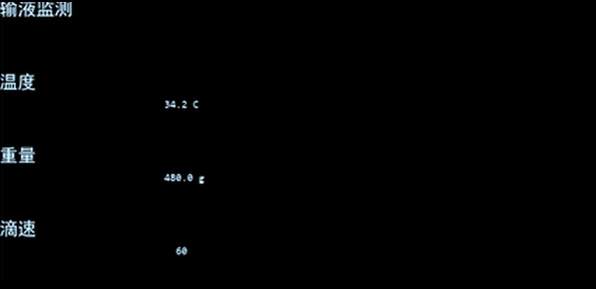

入学 · 物联网工程
桂林信息科技学院 · 电子工程学院。四年从这里开始。
杭州 · 嵌入式 / IoT · 2027 届
不追概念，只做实物：电路、固件、云端、App，一条链路走通；每个数字，都有实验记录背书。
2027 届 · 在杭州找工作

面板数值取自真机截图，无演示数据
01作品
四个项目、一次实习交付、一条 AI 工具链——每一件都能点开看完整拆解。

PCB-01 · 100×100 mm · 5 MODULES 毕业设计一块底板、两条链路、两个从零手写的客户端。
查看完整拆解→
设备接入、告警防抖、诊断带降级。
查看完整拆解→
OLED 0.96″ · 450.0 g · 60 /min 受托开发称重复核到 ±0.1 g——比指标严二十倍。
查看完整拆解→ AI 结对 · 有实录
AI 结对 · 有实录
92 秒，看完一次完整的 AI 结对开发。
查看完整拆解→四周实习，一个人交付；15 条用例收尾。
GitHub 查看→模型按场景分工，Agent 常驻流程——本站本身就是产物之一。
进入实验室→02技能
下面每一条都在成品里用过；证据在项目页，不在一根进度条里。
03轨迹
光点沿轨迹前行，走过的节点会亮起来。
桂林信息科技学院 · 电子工程学院。四年从这里开始。
桂林信息科技学院 · 电子工程学院。四年从这里开始。
Python/PySerial 自动化测试脚本；用 Wireshark 逐包核对 MQTT 上行报文。
ESP8266 与 ZigBee CC2530 接入、供电设计，在嵌入式 Linux 上跑通。
独立交付 OA 请假系统；修 5 类缺陷；15 条用例全部执行。
硬件 → 固件 → 云端 → Android + 小程序，全部实机跑通并实测验证。
称重加滴速检测；13 段固件迭代后，标定复核到 ±0.1 g。
iot-llm-platform 开源；你正在读的这个站点，也在同一条流水线里上线。
04联系
2027 年毕业，在杭州找嵌入式 / IoT / 全栈的岗位。点一下，邮箱直接进剪贴板。